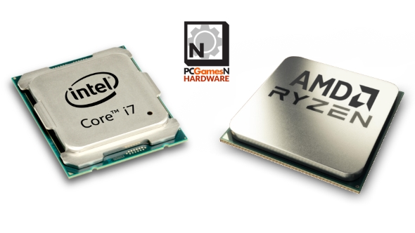
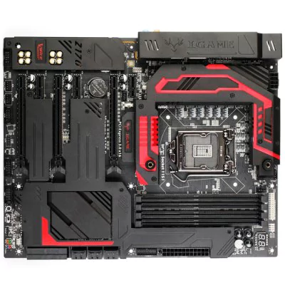
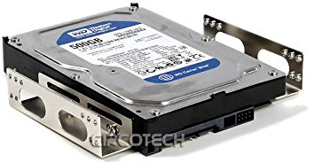
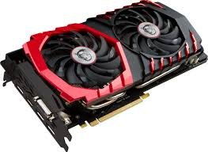
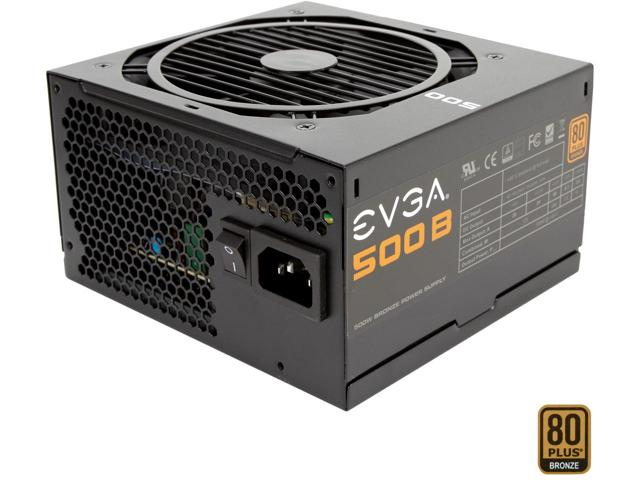

Video gaming has been around for a very long time as early as the 1950's when scientists began creating simple games and simulations as a part of their research. Video games didn't gain its popularity until the 70's and 80's where arcades and gaming consoles were introduce to the public. PC gaming has also been around since the 1950's but the first generations of computer gaming were of the text adventures but it was something that will eventually gain more popularity especially today.
According to a article in 2016 there are at least 1.7 gamers in every American household. In demographics it shows that 63 percent of U.S. households surveyed have at least one frequent gamer. 68 percent of homes owns at least a video game playing device while 48 percent owns a dedicated gaming console. Around 58 percent who frequently play video games are male and 41 percent are female. The most frequently played gaming device is on the pc which is 56 percent of those who responded. Those who spend most of their gaming on gaming console are about 53 percent and 36 percent are those who spend most time on gaming on smartphones. According to another article there are 1.8 billion gamers in the world and about 1.2 billion of those gamers are PC gamers.
Personal computers comes in different sizes and shape some doesn't come with a big price. It is pretty cheap to buy a computer to use at home. About 85.1% of American homes have a sort of computer. Gaming on a pc have been easier than ever now because companies like AMD and Intel have made some CPUs (Central Processing Unit) specifically for gaming. There are many component that comes together to make a computer but none more important than the CPU. The CPU is the brain of the computer and Intel makes one of the best CPUs for gaming. Building a computer has never been easier to build and people tend to build their own computer for gaming than buying a pre-built computer. Sometimes it is much cheaper and better performance without the price of branded company who prebuilt computers to sell. There are guides to help those who wants to start gaming on a pc but are too afraid that it is hard to build a computer. It can be one of the simplest task to do as companies who makes computer components makes it easy to install computer parts. Youtube have a large amount of Youtubers who has guides on how to pick your components to build a computer and how to put those parts together. This video is one of many that can help those who wants to build a computer.
The CPU is essential to building a computer and getting a good CPU will determine the type of performance you get when gaming. It is processing movements in games and do calculations for a computer ai. It is responsible for running the game instruction and the CPU process the input from a user or player. It also tells what a GPU (Graphics Processing Unit) should do and what images to render. Because a CPU can get really hot the CPU needs proper cooling. There are many different options for cooling a CPU. Air cooling is using heat sinks to contact the CPU and cool it by using a fan. Water cooling is using a heat sink to contact the CPU but instead of air to cool it it is cooled by water through tubing and a pump, also using a radiator to cool the water. Water cooling works better at cooling the CPU, but air cooling has come a long way to get the performance of water coolers.
The motherboard is the main printed circuit board that holds the CPU. It holds and allows communication between different components that are connected together through the motherboard.
Hard drives, SSDs, and m.2 are storage for holding programs and the operating system. SSD or solid state drives and m.2 are much faster in reading and writing data that it helps open applications much quicker than a regular hard drive. Some come in different storage sizes and have different sizes.
The graphics card is one of the most important component for PC gaming because a more powerful card will give a PC gamer more performance than if they have a card that have less computing power. But for more performance means you would have to spend more to get more. The graphics card is what renders the images that is seen on a monitor screen.
The power supply is what gives the power to the whole system. Without it the computer won't start boot because it needs power to every component in that needs power to boot. There are different wattages that a power supply have and it also have how efficient a power supply is but like GPU and CPU, the more wattages and efficiency of a power supply will cost more.
